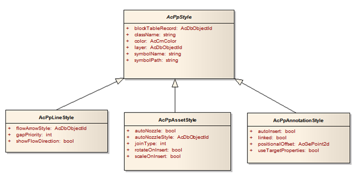

Styles act as the graphical and behavioral definitions for all assets and line segments within a project.
The ability of Plant SDK to reference geometric and functional information beyond the traditional boundary of an individual drawing file sets apart Assets and LineSegments from standard AutoCAD entities.
For assets (AcPpAsset and derived classes) including equipment, nozzles, instruments, and inline components, the graphical traits include a block name. Every asset that is the same style uses the same block name. In this regard, AcPpAsset works similarly to an AcDbBlockReference.
When a new P&ID entity is created, style geometry is assigned from projSymbolStyle.dwg (the project library of graphical styles).
An AcPpAsset has a styleId for an object that is an AcPpAssetStyle. An AcPpLineSegment has a styleId for an AcPpLineStyle.
Styles are stored in the NamedObjectsDictionary. The hierarchy of NamedObjectsDictionary is as follows:
AcPpAsset is assigned a style, and that style points to a block definition. The block definition blockTableRecord property is the ObjectId of an AutoCAD AcDbBlockTableRecord. The blockTableRecord of an individual asset is read-only.
There are a number of style classes that are used by different types of P&ID entities. The class hierarchy for styles is shown below.

asset styles
Below is sample code that lists style information for a selected P&ID entity.
//C#
using Autodesk.ProcessPower.Styles
Database db = AcadApp.DocumentManager.MdiActiveDocument.Database;
Editor ed = AcadApp.DocumentManager.MdiActiveDocument.Editor;
ObjectId entId = ed.GetEntity("Pick an ASSET: ").ObjectId;
Autodesk.AutoCAD.DatabaseServices.TransactionManager tm = db.TransactionManager;
using (Transaction tr = tm.StartTransaction())
{
Asset asset = (Asset)tm.GetObject(entId, OpenMode.ForRead, false);
if (asset == null) return;
Style style = (Style)tm.GetObject(asset.StyleId, OpenMode.ForRead);
string sMsg = "\nStyle: " + style.Name;
sMsg += "\n " + style.ClassName;
sMsg += "\n " + style.Description;
sMsg += "\n " + style.SymbolName;
ed.WriteMessage(sMsg);
}